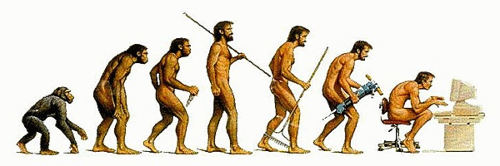

2015-16 has been the year of the coding bootcamp. And for good measure. There’s a dramatic shortage of technical talent, and schools (specifically primary schools) are doing a terrible job of filling that gap. Besides a plethora of 6-week programs for people realizing that iBanking sucks, the other result of this technical gap has been well-intentioned campaigns by politicians to have coding taught in schools.
I think this is necessary, good, and too late*
Teaching computer science is necessary because computers, and the software that brings them to life, have become man’s most successful tool. As a species that differentiates itself by tools, the computer is the hallmark of homo sapiens. Computers are necessary in daily life. Internet access has become a human right.

It is likely necessary to understand, even at the most amateur of levels, how our most prized tool works, how to make it do what you want, and how to make it better if it powers all of your waking hours. In the context of high school, this is as necessary as learning about biology.
Teaching computer science in schools is good because building the foundations of knowledge is good. Foundations provide a starting point. Students can learn whether they want to dive deeper. They become better prepared for life in the ‘digital age’. Computers are no longer black boxes.
Teaching computer science in schools is too late to achieve the goals which politicians champion. High schoolers learning computer science sounds great. It sounds like employment for our generation will be no problem, if everyone could just take all of those unoccupied software jobs. It sounds like high schoolers will be better prepared for the workforce than ever before. This is not true.
Timing, bureaucracy and progress will prevent this utopia
Like most things the government does, this too is quite late. Rather than wait until success on the app store has similar odds as the lottery, four years ago would have been nice. This, however, is a shitty crux to any argument because most governments aren’t known for their timing. Heck, mankind is pretty bad as a whole (cough renewable energy cough). Lagged reactions FTW!
Bureaucracy, now this is a serious problem. If bureaucracy did not exist, rolling out coding across all schools today would likely achieve the marketed goals. But in reality, it will likely take a decade. At least.
Consider the No Child Left Behind Act (2002), the whole: “improving the educational opportunities and outcomes for children from lower-income families.” Seems like a generally good idea, right? The government was definitely aggressive in implementing such a change, no? Well, the actual deadline for schools doing anything about it was 2013-2014. On top of that, 38% of schools were failing to make adequate progress in 2010. A year later, the U.S. Secretary of Education claimed that 82% of schools would be labeled “failing.”
It seems likely that if bureaucracy thwarted improving opportunity for children from lower-income families, it will also thwart teaching computer science in high schools.
Nevertheless, the biggest stickler and the one that is equally exciting as it is absolute in preventing the realization of politicians’ hopes is progress. Wait what?
By the time CS is implemented in public schools across America** it will be as useless (or useful) as high school chemistry. Knowing the syntax of java will be like knowing the periodic table. A good foundation? Yes. Useful for employment? …not so much.
Oh, but you can create apps with computer science! Sure, you can. But by then, program synthesis will have made anything doable by an intelligent high schooler as easy as typing in a few sentences. Or clicking a few buttons. We already did this with basic websites. The startup I’m building is doing this now with scripts. Microsoft research has experimented with even greater ambitions.
Software is eating the world. And it’s eating itself.
Any programming that is foundational (and simple) enough to be taught in high school, won’t have enough power to create the powerball winners of the past decades. Sure, there may be a few lottery winners. But they’ll be the ones repackaging the same features in different combinations. The only difference is that in ten years they won’t need programming to do it. They’ll have a nice user interface.
So if there is a conclusion to this, it’s threefold:
-
If you really want to get the competitive edge on the job market and maybe make the next snapchat, learn now. Don’t wait for it to be taught in your school.
-
Teaching computer science in school won’t “revolutionize” employment for our generation. It’ll just be another subject, albeit a bit more modern and with a shorter history.
-
The future of software development is more software and less developers. I find that very exciting and I hope you do too.
*Too late to reach the intended results.
**With qualified teachers, etc. I had a volleyball coach who didn’t have a laptop teach my AP CS course.